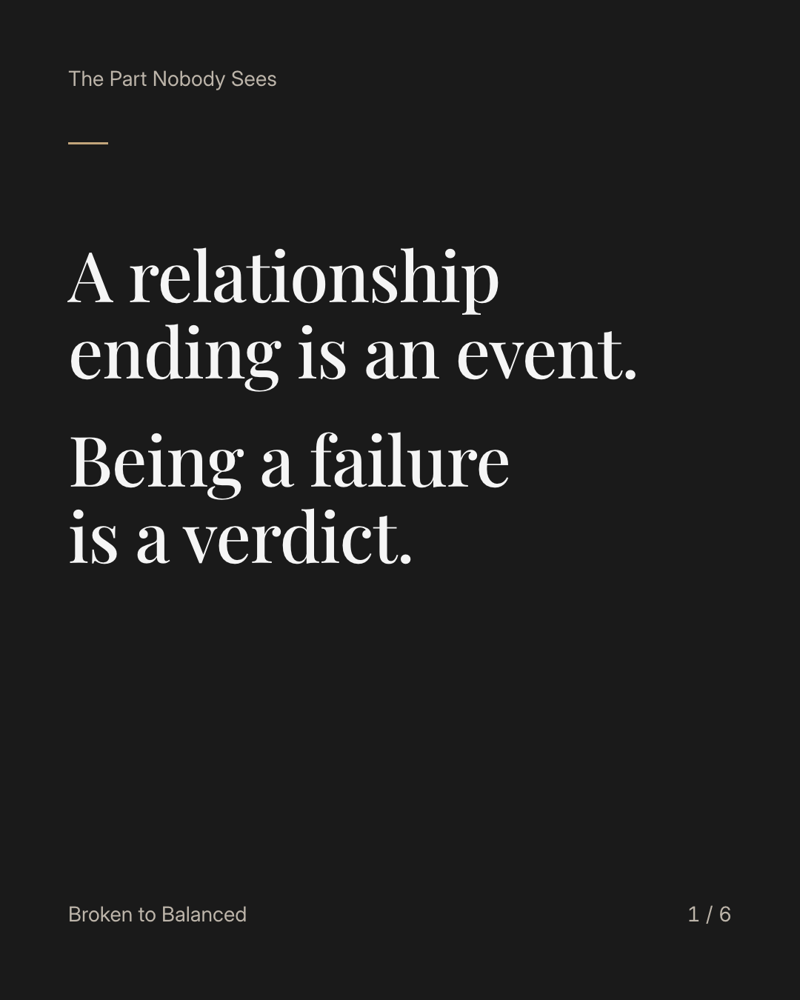
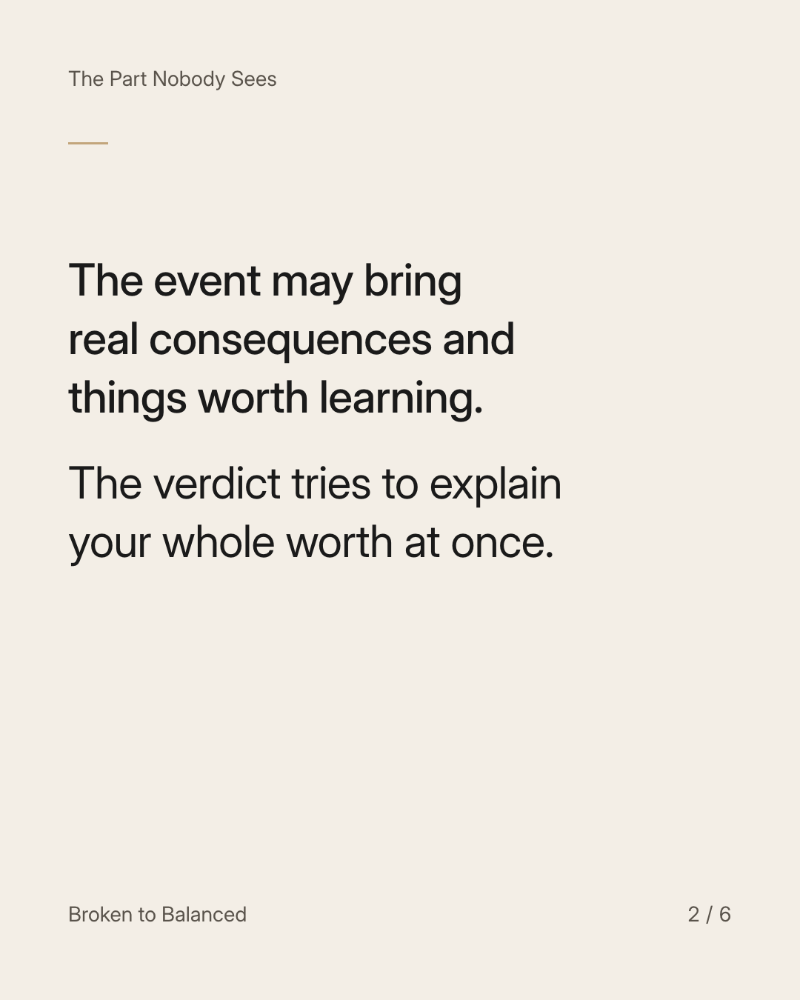
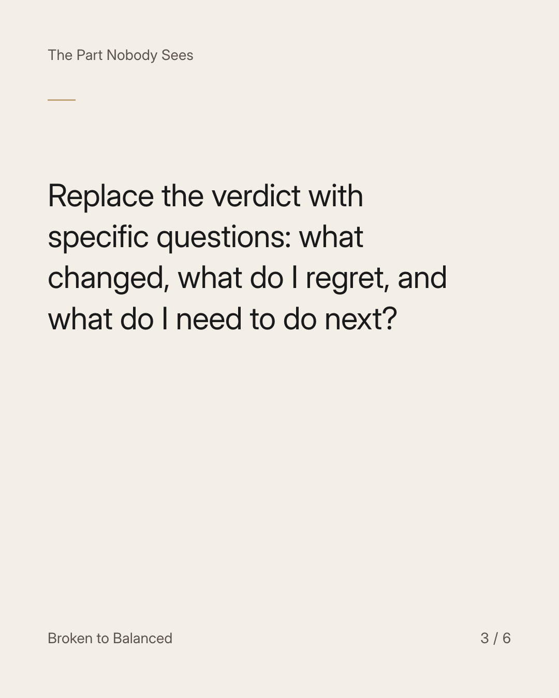
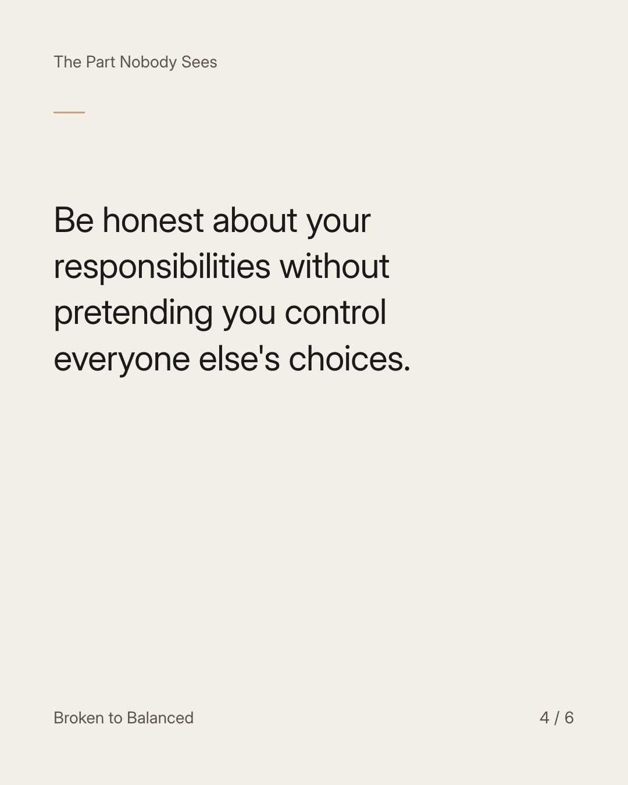
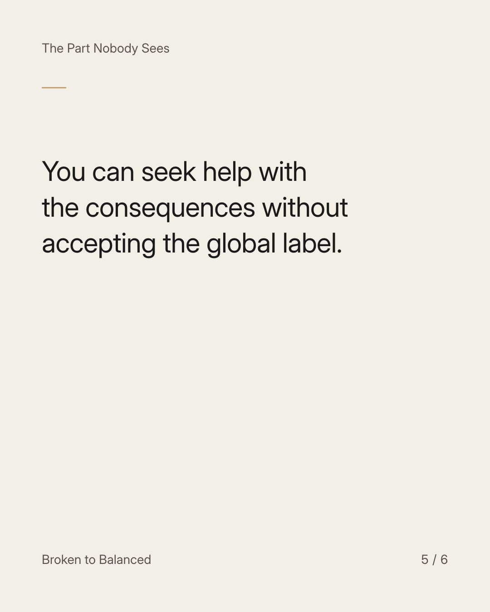
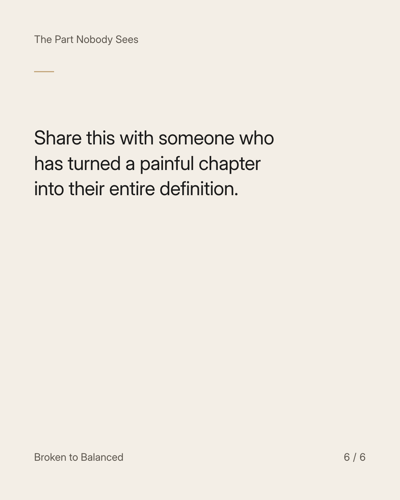

Exact text and accessibility text
A relationship ending is an event. Being a failure is a verdict.
Slide 1 of 6. A relationship ending is an event. Being a failure is a verdict.


Exact text and accessibility text
The event may bring real consequences and things worth learning. The verdict tries to explain your whole worth at once.
Slide 2 of 6. The event may bring real consequences and things worth learning. The verdict tries to explain your whole worth at once.


Exact text and accessibility text
Replace the verdict with specific questions: what changed, what do I regret, and what do I need to do next?
Slide 3 of 6. Replace the verdict with specific questions: what changed, what do I regret, and what do I need to do next?


Exact text and accessibility text
Be honest about your responsibilities without pretending you control everyone else's choices.
Slide 4 of 6. Be honest about your responsibilities without pretending you control everyone else's choices.


Exact text and accessibility text
You can seek help with the consequences without accepting the global label.
Slide 5 of 6. You can seek help with the consequences without accepting the global label.


Exact text and accessibility text
Share this with someone who has turned a painful chapter into their entire definition.
Slide 6 of 6. Share this with someone who has turned a painful chapter into their entire definition.
Exact caption
Plain-text fallback: select and copy the caption.